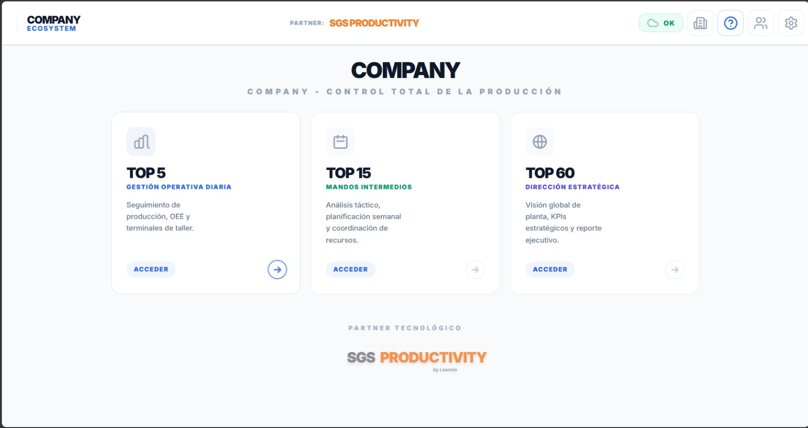
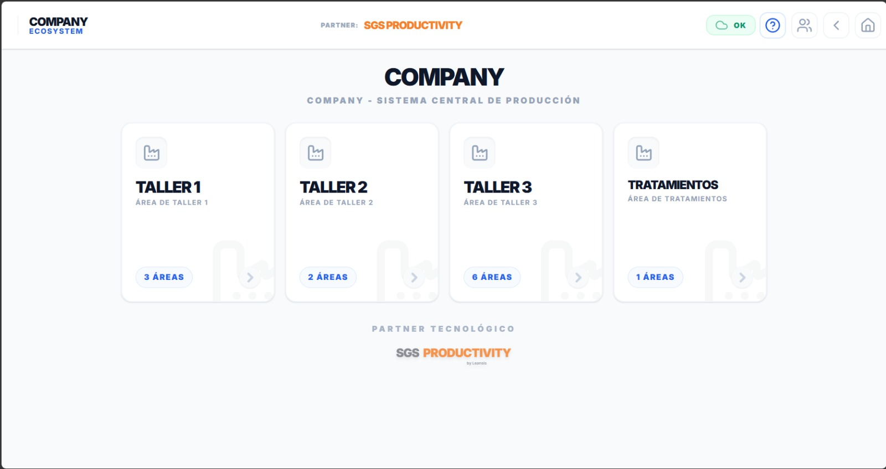
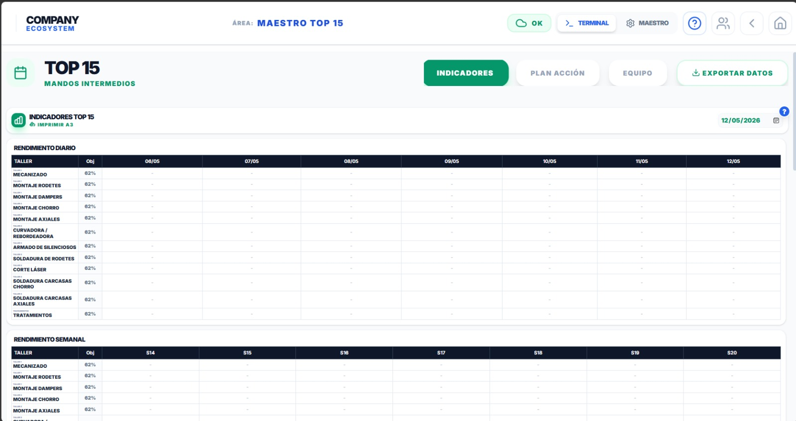

Jumosol
Ecosistema digital para la planificación estratégica y el seguimiento de la transformación industrial.
Acceder a la App
Explorar la Interfaz
Funcionalidades Clave

Terminal de operación en planta
Interfaz operativa que permite a los operarios gestionar tareas, registrar producción y controlar incidencias en tiempo real dentro del área de trabajo.
- Selección de operarios y asignación de tareas
- Registro de producción y tiempos reales
- Gestión de averías y paradas de línea
- Diario de turno con seguimiento completo

Gestión central de talleres
Vista global del sistema de producción que permite organizar y acceder a los distintos talleres y áreas de la planta de forma estructurada.
- Acceso centralizado a todos los talleres
- Organización por áreas productivas
- Visualización de número de áreas por taller
- Navegación intuitiva por toda la planta

Gestión estratégica TOP 60
Módulo orientado al análisis estratégico que integra indicadores clave, planificación y seguimiento de resultados en el marco de gestión TOP 60.
- Cuadro de mando integral (CMI)
- Preparación de reuniones estratégicas
- Seguimiento de ahorros y productividad
- Análisis detallado por áreas y talleres

Cartera de iniciativas y quick wins
Centraliza todas las ideas y propuestas de digitalización en una cartera estructurada. Filtra, prioriza y convierte las mejores iniciativas en proyectos activos con un solo clic.
- Registro de iniciativas con impacto estimado
- Clasificación por área, tecnología y coste
- Flujo de aprobación y conversión a proyecto

Informes ejecutivos de transformación
Genera automáticamente informes de avance listos para presentar a dirección con el estado global del roadmap.
- Informes periódicos en PDF
- Vista ejecutiva del progreso
- Exportación de datos